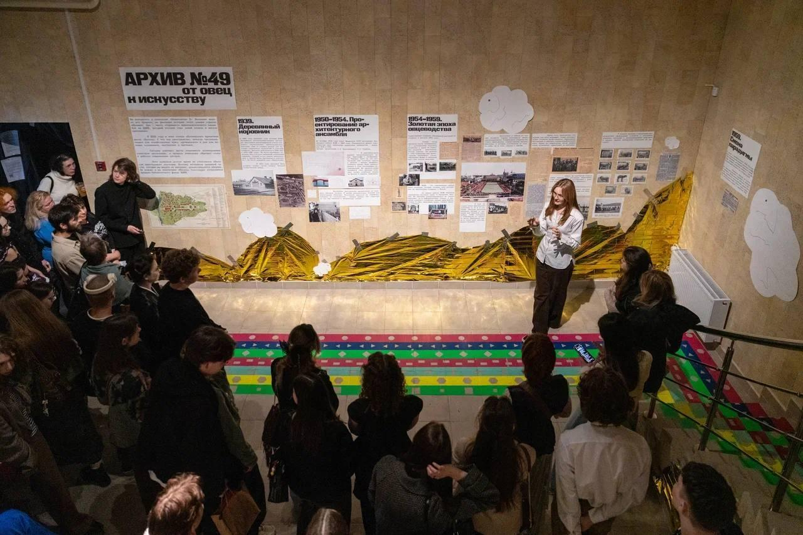
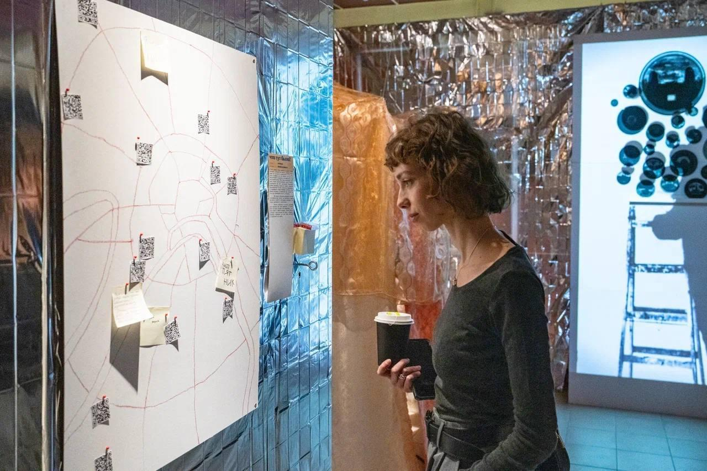
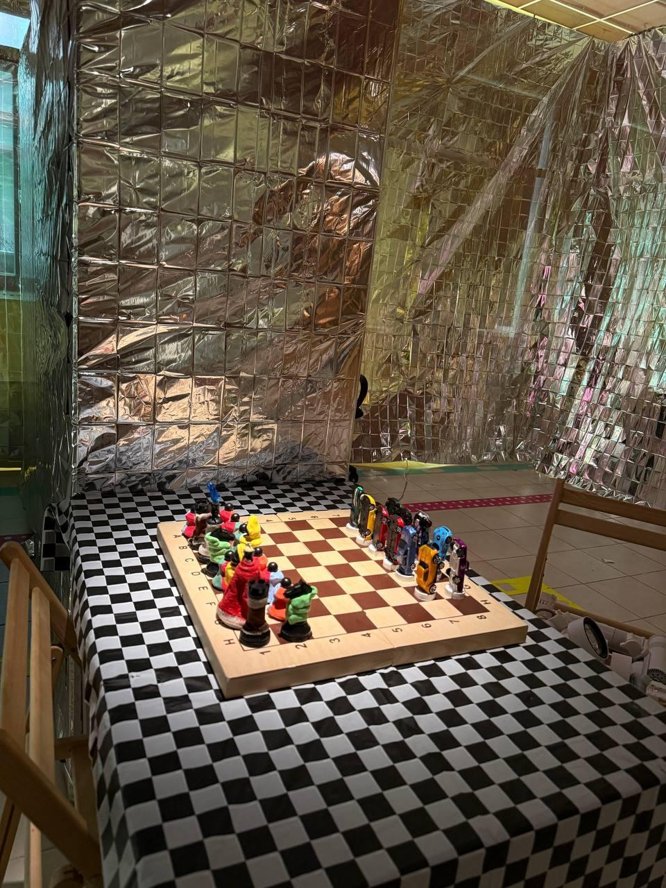
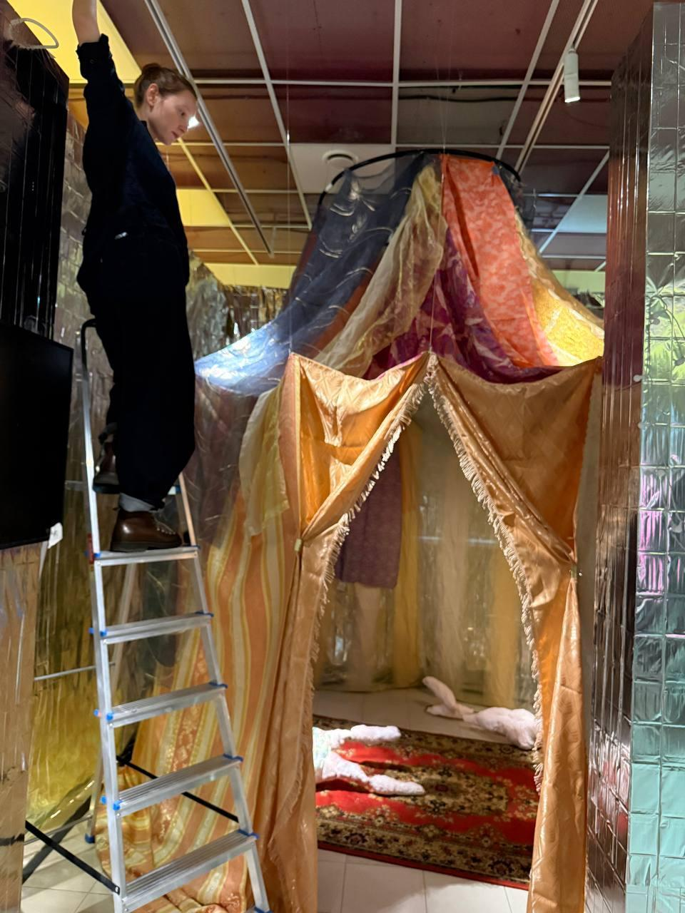
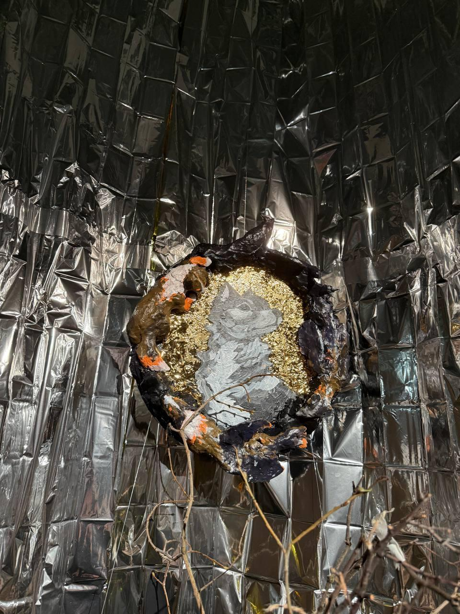

Павильон
№49
Самостоятельный выставочный проект в павильоне №49 на ВДНХ.
- Роль
- Участие в выставочном проекте
- Статус
- Реализация
- Автор
- Оксана Никитина

О проекте
Самостоятельный выставочный проект в павильоне №49 на ВДНХ.
В проекте свет работает вместе с отражающими материалами, графикой и объектами экспозиции, выделяя отдельные сценарии внутри насыщенного выставочного пространства.



